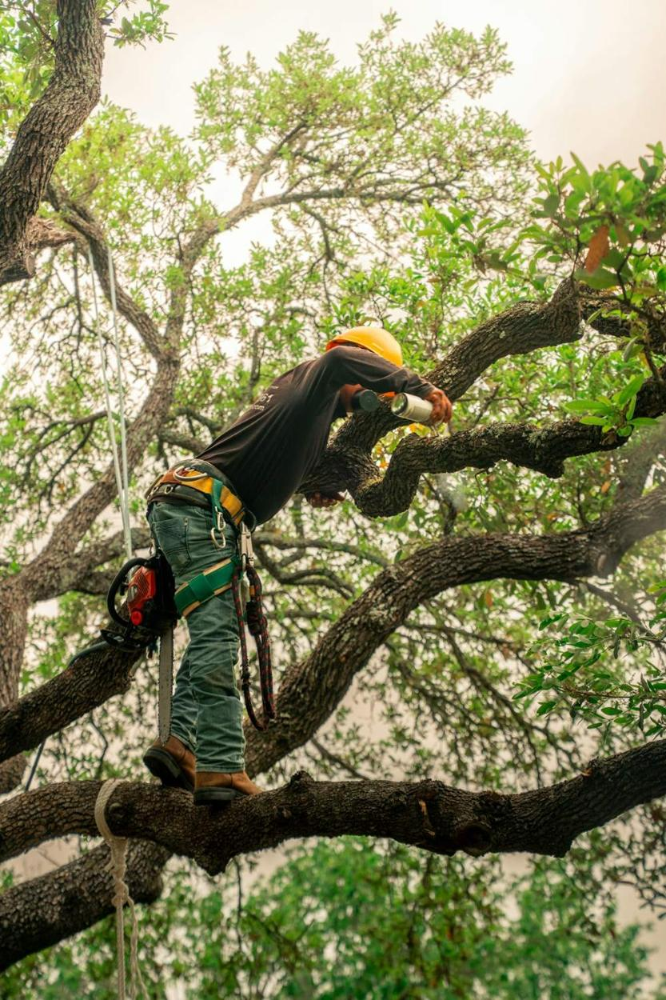
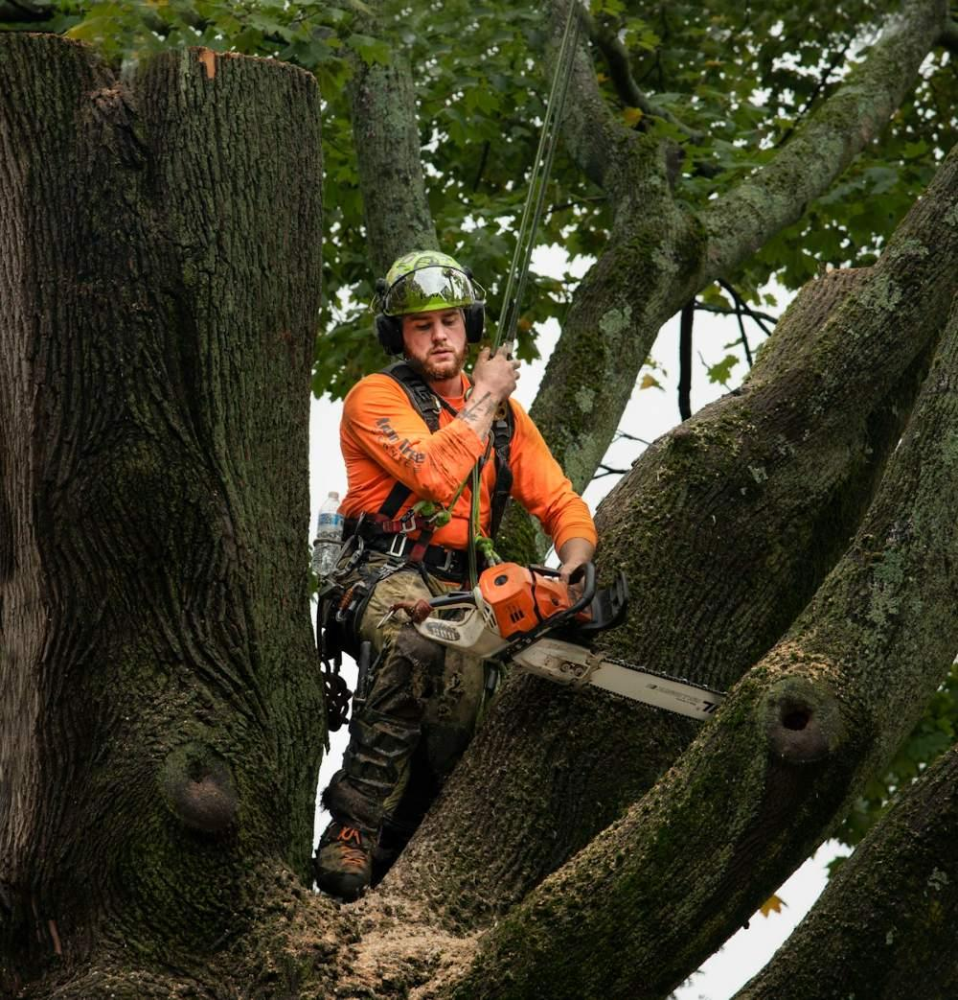
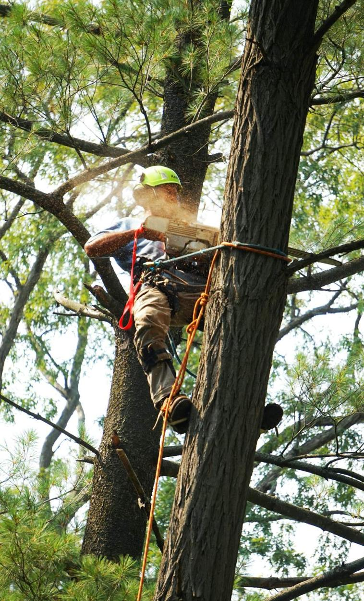

Élagage, abattage, dessouchage, broyage. Décrivez votre arbre, je vous dis comment j’interviens, avant même de venir.
Devis gratuit sous 48 hJe vous réponds sur la méthode, la période et les démarches.
Une taille à la mauvaise saison fatigue l’arbre. Voilà mes repères.
Février à mars
Septembre à mars, hors nidification
Octobre à mars
Novembre à février

Élagage raisonné
Taille douce, au bon moment, sans griffes sur les troncs.
Un chantier balisé, terrain nettoyé, bois broyé ou évacué selon votre choix.
Taille douce, éclaircie, taille de formation, arbres de toute hauteur.
Démontage près des maisons et des lignes, abattage direct quand l’espace le permet.
Rognage de souche et broyage en copeaux. Le terrain est prêt à replanter.

Travail en hauteur
Grimpe sur corde quand la nacelle ne passe pas. Rien n’est abîmé au sol.
Je viens vite sécuriser un arbre cassé ou penché.
Ne touchez pas aux branches si une ligne électrique est proche. Éloignez-vous et appelez-moi.
Photo par SMS, je vous dis si c’est urgent. Je sécurise la zone avant de couper.
Arbre classé ou zone protégée ? Je vérifie avant de couper et je fais les démarches avec la mairie.

Photo : LaRon Rosser / UnsplashDu lundi au vendredi, 7 h 30 à 17 h 30. Urgences sur appel.